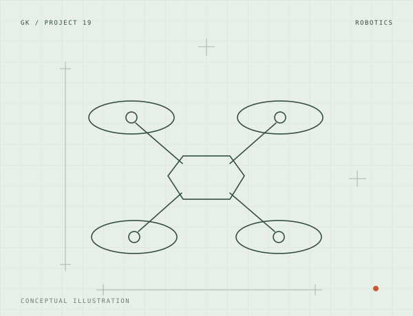

Robotics / Project archive
Micro swarming drone.
A small-scale drone project in the portfolio.

Project brief
Full build documentation is on the way.
Project notes
A detailed write-up, build photographs, and results for this project are being prepared.